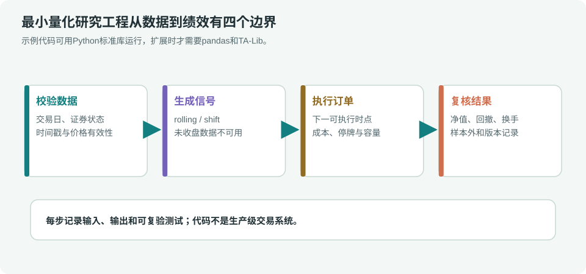
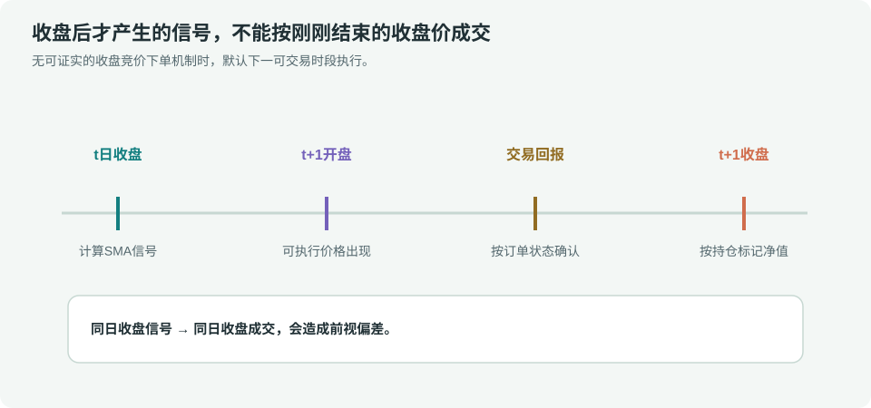
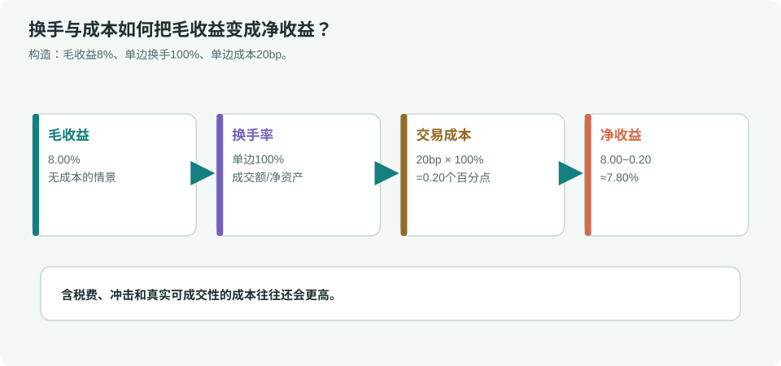

CHAPTER 24 · REPRODUCIBLE QUANT RESEARCH
Python量化工具链：从数据到可复现回测
Python让数据分析易于表达，但正确的决策时间、成本和成交约束需要研究者明确实现。
回测曲线很平滑，为什么真实交易可能完全不可复现？
在历史数据上写几行Python就能生成“策略收益曲线”，但如果信号采用当天收盘价、成交也被假设为当天收盘价，模型便在时间上做了不可能的事情。再忽略滑点、退市、停牌、交易量与样本选择，漂亮收益可能只是程序错误的结果。
一个最低限度可复核的量化程序需要有四层：带时间戳的数据、确定性的特征与信号、下一可交易时点的订单模拟、净值和风险的验证。它不需要大型回测框架才能讲清楚，但必须通过可自动运行的边界测试。

Python量化工具链：哪些任务属于pandas、NumPy、Matplotlib、TA-Lib？
pandas主要管理带时间索引与股票索引的表格，擅长分组、连接、滚动窗口和缺失处理；NumPy处理数值向量和数组计算；Matplotlib把净值、回撤、暴露与诊断结果画成图；TA-Lib提供技术指标实现。它们职责不同，不能因为安装了TA-Lib就跳过指标热身、时点和交易执行验证。
以pandas为例，按证券分组计算3日均线，应先按证券与日期排序，再调用groupby和rolling。rolling的前两期若没有完整窗口，就应保留NaN。对已完成日线信号，必须将它映射到下一可交易时段的订单，而不是仅把收益率shift一下就默认订单真实成交。
import pandas as pd
# 代码要求在已经有含 ts_code, trade_date, close 的 DataFrame df 上运行。
df = df.sort_values(["ts_code", "trade_date"]).copy()
df["ma3"] = (df.groupby("ts_code")["close"]
.transform(lambda x: x.rolling(3, min_periods=3).mean()))
df["signal_after_close"] = df["close"] > df["ma3"]
# 下一步仍需与 t+1 open 和证券可交易状态做时点连接。在当前公开文档中，pandas的shift、rolling和resample有不同的索引和时间含义；尤其shift(freq=...)只改变时间索引的行为需要理解，不能简单称其为“下一日成交”。
TA-Lib与指标初始化：函数有输出不表示信号已经可交易
使用TA-Lib可以快速计算RSI、MACD、SMA和布林带，但指标的初始阶段、回溯参数和版本会影响初始值。若策略使用RSI14，最初若干期没有完整计算依据，应该显式标识热身/不交易，而不是把空值填成买入信号。
# 可选依赖：pip install numpy TA-Lib
import numpy as np
import talib
close = np.array([100,101,102,103,101,100,104,105,
106,108,107,106,109,110,111,112], dtype=float)
rsi = talib.RSI(close, timeperiod=14)
# 前期可能为NaN；须在信号生成前明确过滤。
assert len(rsi) == len(close)该示例演示函数签名和热身结果，不表明RSI具有已验证的交易预测能力。不同算法对EMA/MACD初始化和缺失值也可能存在差异，应固定依赖版本、保存原始价格与计算口径，并用手工小样本验证公式。
回测时序：先观察t收盘，最早t+1开盘执行
假设某日收盘价103，3日均线101.33。只有该日收盘完成才能确认这一信号。若策略规则是“收盘后产生信号，下一交易日开盘买入”，模拟成交价应对应t+1开盘报价，并考虑价格跳空、开盘竞价是否成交与证券交易限制。

将t日信号和t日收盘回报直接相乘，可能把当天已经发生的价格变化算成策略赚到的钱。正确数据结构应将decision_time、order_time、trade_time和mark_time分别存储，执行时保留挂单、撤单和部分成交状态；不能仅从收益序列倒推理想仓位。
离线可执行的最小回测：一股、下一交易日、含成本
仓库提供标准库脚本examples/quant_lab.py。其next_open_backtest接受每期完成后的收盘价数组与对应下一期的开盘价数组，对3日滚动均值生成信号，并只在下一期开盘模拟每次交易一股。
from examples.quant_lab import next_open_backtest
closes = [100,101,103,102,99,102,105]
next_opens = [100.3,101.4,103.3,101.8,99.5,102.5,105.2]
result = next_open_backtest(
closes, next_opens, window=3,
fee_bps=10, slippage_bps=10)
assert result["fills"][0][0] == 3 # 第3次观测收盘信号 → 第4期开盘
print(result["fills"], result["nav"])这是教学级最小系统：初始现金1,000元，每笔最多买入一股，不允许卖空，不模拟涨跌停、拆股、股息、融资、税费、流动性容量和真实盘口成交。代码中每次交易都记录执行价格及成本，因而可检验无成本结果与有成本结果的差异。要进入正式研究，仍须加入时间戳对齐、证券池、复权现金事件、订单状态与组合多资产风险约束。
交易成本与换手：不能用毛收益替代净收益
假设年化毛收益8%、年度单边换手100%、每单位单边交易金额总成本20bp，则交易成本约为0.20个百分点，简化年化净收益为7.80%。这里的单边换手已经是买卖合计成交金额定义下的一种单边口径，不能无解释地再乘以2。

用自动化测试确认时间顺序、成本和订单状态
请在仓库根目录运行以下命令。测试文件examples/test_quant_lab.py覆盖财报修订版本、拆股调整、均线热身、信号在下一期开盘执行、无效价格、订单重复提交和部分成交。
python3 examples/quant_lab.py
python3 -m unittest discover -s examples -p 'test_*.py' -v真正的样本外流程还需要固定研究假设、训练窗口、验证窗口和从未用于调参的最终测试窗口。若研究者根据最终测试结果继续修改特征和权重，那个测试区间就不再独立；策略必须重新接受新的样本外检验。
独立复核
- 收盘信号如何映射到下一可交易价格？
- 为什么rolling的前n−1期不应强行填出完整均线？
- 8%毛收益、100%换手和20bp成本如何变成7.80%净收益？
- 为什么最小教学回测不能直接连券商进行实盘交易？
API与研究方法资料
- pandas：DataFrame.rolling
- pandas：DataFrame.shift
- pandas：DataFrame.resample
- TA-Lib Python官方文档
- CFA Institute：Backtesting and Simulation
可选依赖包接口可能随版本更新；最小离线程序只使用标准库。